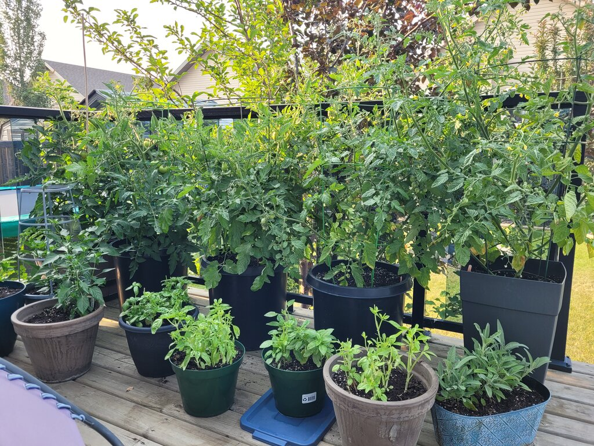

A little bit about...

My Gardening Hobby
From start to finish, I love the whole process of gardening, even weeding. My garden isn’t super large but I manage to get my favorites planted each year. I try to fit in peas, corn, carrots, onions, beets, beans, tomatoes, zucchini, pickling cucumbers, potatoes and more.


Start Early
Early in the year, I plan my garden layout by mapping out what I will plant and where, and then I order seeds. In late March and early April, I start planting seeds indoors, like tomatoes, onions, peppers, and a variety of herbs. Because of our cold climate they need to be nurtured and protected from the weather for a couple of months, so they are put under special grow lights until they are ready to move to the greenhouse. Sometimes, the greenhouse isn’t enough, and we need to bring them inside for the night, so our kitchen becomes a temporary nursery, lol.
Prepare for Setbacks
No matter how skilled a gardener is, we cannot control nature, so prepare for setbacks and don’t give up! There will be good years and bad years, but there is still joy to be had in getting your hands dirty and being in nature. I have experienced flooding, hail, strong winds, and even poor germination due to poor seed or soil quality. Every year is different and there is often something that fails, but if I expect that, it is easier to bear when the hail comes down.

Enjoy the Harvest
There is a lot of work and a lot of joy in the growing process but don’t stop there. The harvest should be the best part! I love to see the buckets and boxes of food that I have grown. My parents taught me how to preserve these things so that my family can get joy and nourishment from my efforts well into winter. Some of my favorites are homemade salsa, pickles, blanched and frozen vegetables, and onions that last until next July!
Give it a Try
If you haven’t had the pleasure of growing your own food before, you should give it a try. I enjoy growing tomatoes, peppers, and herbs on my deck each year. Even something as simple as a Basil plant can bring you joy, so why not give it a try.
